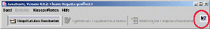

Herzlich willkommen zu Javascore, dem Auswertungsprogramm für Segelregatten.
Javascore stellt über das JavaHelp System Hilfe zur Verfügung. Im linken Feld befindet sich die Inhaltsangabe, aufgeteilt in die beiden Bereiche Allgemeine Informationen und Javascore Programmoberfläche. Durch anklicken der Inhaltsthemen kann man sich den Hilfetext dazu im rechten Feld anzeigen lassen.
Javascore bietet eine kontext-sensitive Hilfe für den jeweiligen Arbeitsbereich der aufgerufen ist.

Durch Klicken auf die Hilfe-Schaltfläche (
) und danach auf den Bereich, der erklärt werden soll, erscheint der zum jeweiligen Dialogfeld
gehörende Hilfetext.
Anmerkung: Durch Drücken der F1 Taste kann man ebenfalls entsprechende Hilfe aufrufen.
Die bisherigen Hilfetexte sind noch ein wenig roh. Wenn du 'Löcher' feststellst oder Fragen nicht beantwortet werden, nimm bitte Kontakt mit der Programmautorin Sandy Grosvenor sandy@gromurph.org auf oder für die deutsche Programmanpassung mit Dietmar Gottke javascore@gottke.com. Unterstützung zur weiteren Bearbeitung der Hilfetexte ist stets gern gesehen.
Mehr Informationen über die gerade aktuelle oder vorausgegangene Versionen erhält man auf der Javascore Internetseite.